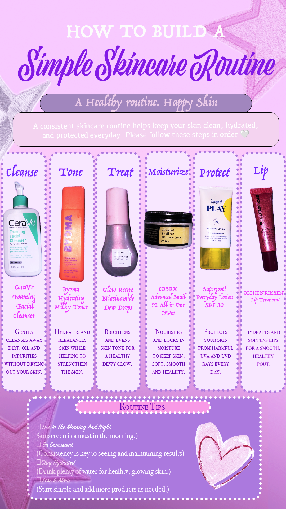
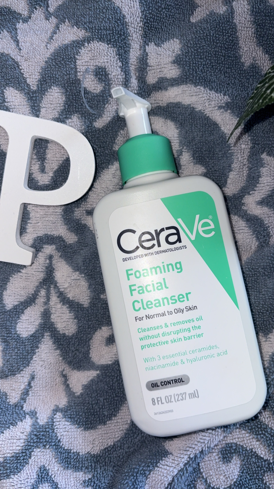
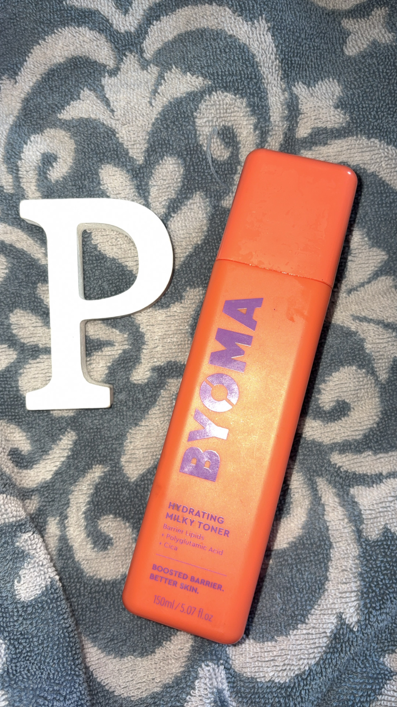
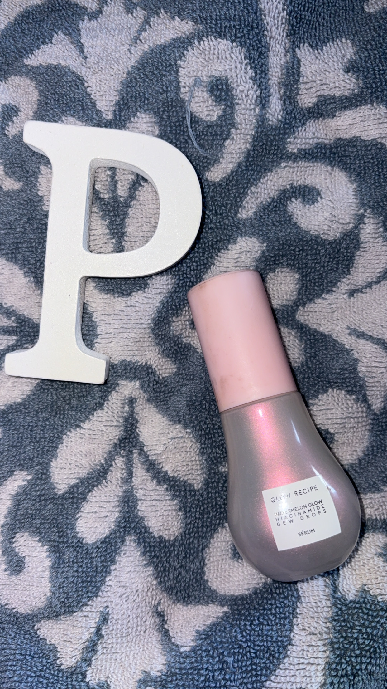
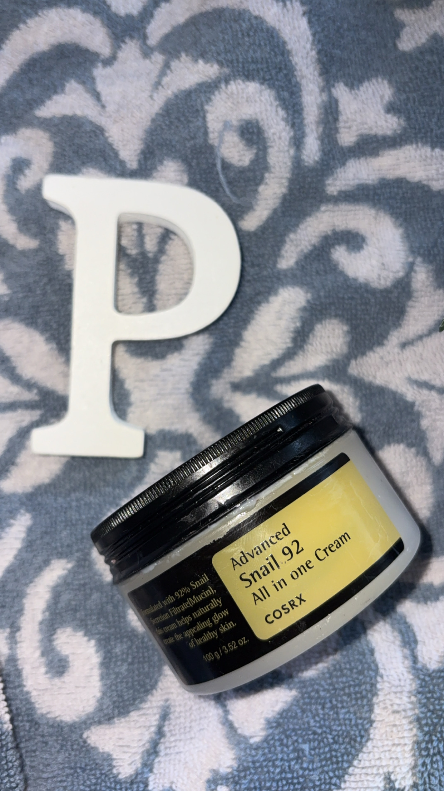
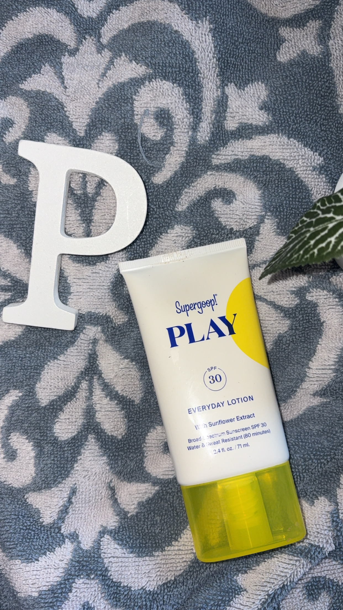
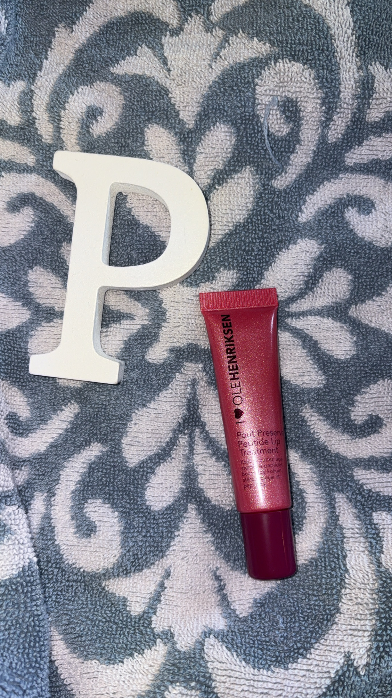

Welcome to this interactive skincare learning experience! This lesson introduces beginners to a simple six-step skincare routine. Learners will discover how cleanser, toner, serum, moisturizer, sunscreen, and lip treatment work together to support healthy skin.

Created by me: This infographic was designed using Adobe Photoshop and Adobe Firefly. The visuals, icons, colors, and layout were created to make skincare steps easy to understand.

CeraVe Foaming Facial Cleanser removes dirt, oil, and impurities.

Byoma Hydrating Milky Toner hydrates and prepares skin.

Glow Recipe Niacinamide Dew Drops target skin concerns.

COSRX Advanced Snail Cream locks in hydration.

Supergoop SPF protects skin from harmful UV rays.

OLEHENRIKSEN Pout Preserve keeps lips hydrated and smooth.
Created by me: This video demonstrates the correct order of the skincare routine and explains the purpose of each product.
Created by me: This audio recording reviews the main skincare concepts.
The infographic uses visuals, icons, and organization to reduce cognitive load and allow learners to quickly understand skincare steps.
The video combines narration and demonstrations, helping learners visually understand how products are applied.
The audio reinforces information and provides another way for learners to review important concepts.
The consistent colors, fonts, and layout create a professional and engaging learning environment.
After completing this lesson, reflect:
Which skincare product do you think is most important and why?
How would you explain a skincare routine to someone who has never created one?
The infographic introduces the skincare routine visually. The instructional video demonstrates each step, while the audio summary reinforces important information. Together, these digital media elements support different learning preferences and improve understanding of how skincare products work together.